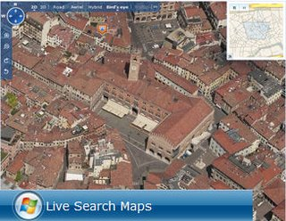
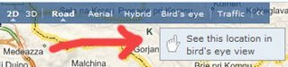

Last January I posted a video demoing how you can explore Italy from the sky using Google Maps and Microsoft's Live Search Maps. They are both excellent tools and you'll not be disappointed either way. Working myself at Microsoft though, I've done some extra research about the recent coverage improvements of the Italian territory using our services, and here is what I discovered. New bird's eye views Live Search Maps now offers bird's eye views for 70+ Italian cities. What it means is that you can enjoy aerial views at low altitude of several important cities in Italy and at different angles too! Check out Udine, Milan, or Padua. Here is a current unofficial list which will grow overtime. To try yourself, go to Live Search Maps, enter one of the cities in the list, zoom a little closer until the Bird's Eye label in the toolbar is enabled. Then click it and enjoy!
Photosynth technology meets maps I already blogged about this cool technology which turns photo into 3D experiences. Photosynth is still an unreleased product incubated by Microsoft Research. What excites me are the integration possibilities with online mapping services. For example, you can start from a satellite view of Rome and drill down to the details of St. Peter's cathedral. This video demos exactly this scenario.